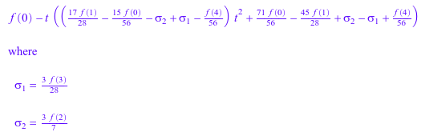
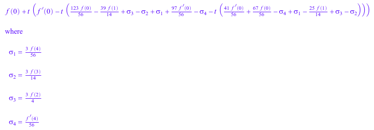
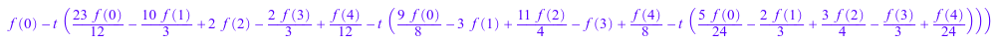
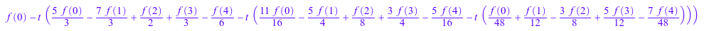
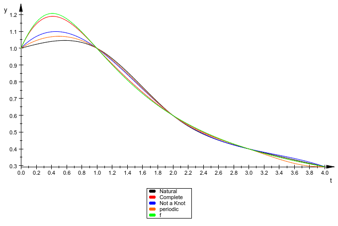

reset();
x := [0, 1, 2, 3, 4];
y := map(x,x->f(x));


S1:=numeric::cubicSpline(x,y,Natural,Symbolic);
S1(t,0);

S2:=numeric::cubicSpline(x,y,Complete=[f'(0),f'(4)],Symbolic);
S2(t,0);

S3:=numeric::cubicSpline(x,y,NotAKnot,Symbolic);

S3(t,0);

S4:=numeric::cubicSpline([op(x),x[1]],[op(y),y[1]],Periodic,Symbolic);
S4(t,0);

f:=x->(x+1)/(x^2+1);

plot(
plot::Function2d(S1(t), t=0..4, Color = RGB::Black,Legend="Natural"),
plot::Function2d(S2(t), t=0..4, Color = RGB::Red,Legend="Complete"),
plot::Function2d(S3(t), t=0..4, Color = RGB::Blue,Legend="Not a Knot"),
plot::Function2d(S4(t), t=0..4, Color = RGB::Orange,Legend="periodic"),
plot::Function2d(f(t), t=0..4, Color = RGB::Green,Legend="f")
);
